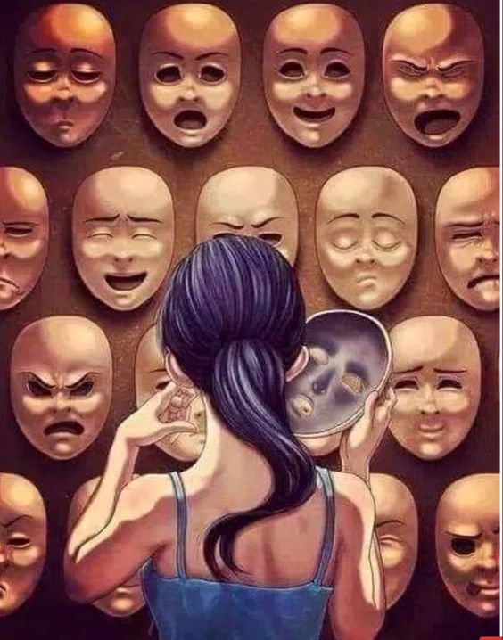

Emotions
This piece of art show how we put on diffrent faces by getting to choose our emotions.
I'm an artist who loves to capture moments through vibrant brushstrokes and evocative compositionsy. My art is all about expressing emotions and telling a story. Come join me on a journey of boundless imagination and creativity
I'm Daniella Owens, 17 years old and a student at PAU (Pan Atlantic University), where I'm tackling Information Science and Media Studies (ISMS). But my real passion lies in art. Ever since i was little, I've been doodling and drawing, and now I'm obessed with animation. My dream is to be a professional animatior someday, bringing characters and stories to life through captivating motion grachics. I know I'm just starting out, but I'm super excited to keep learning and improving my skills. This Portfolio is a window into my artistic journey so far, and i can't wait to see where it takes me.
This piece of art show how we put on diffrent faces by getting to choose our emotions.
The hourglass is a classic symbol for the passage of time. People swimming in it could represent how we spend our time or how time carries us forward..
Art is a way to express ones self, whether it be through creating something completely abstract or a piece with every detail possible. Any piece is left up to the viewers interpretation, because it’s all about how you feel when you look at something. Coy fish are meant to mean many different things based off of your beliefs, one meaning is love. I interoperate this as a women crying because of love.
The piece is called ‘Inner Sanctuary’ and was custom made using Prisma colour pencils on A4 paper. It resembles the internal place of peace and safety within ourselves.
![Drowning can symbolize feeling overwhelmed by a situation or emotion. The woman in the image could represent someone struggling to stay afloat in a difficult life event, such as a job loss, a breakup, or a personal crisis. She may feel like she's being pulled under by the current, with no control over her circumstances. This could be due to external pressures, such as a demanding work environment or a toxic relationship. Or, she might be grappling with internal challenges, such as anxiety, depression, or grief. Regardless of the source of her struggle, the image captures the sense of powerlessness and despair that can come from feeling like you're drowning.](swimming.jpg)
Drowning can symbolize feeling overwhelmed by a situation or emotion. The woman in the image could represent someone struggling to stay afloat in a difficult life event, such as a job loss, a breakup, or a personal crisis. She may feel like she's being pulled under by the current, with no control over her circumstances. This could be due to external pressures, such as a demanding work environment or a toxic relationship. Or, she might be grappling with internal challenges, such as anxiety, depression, or grief. Regardless of the source of her struggle, the image captures the sense of powerlessness and despair that can come from feeling like you're drowning.
This is just an image of the sunset.